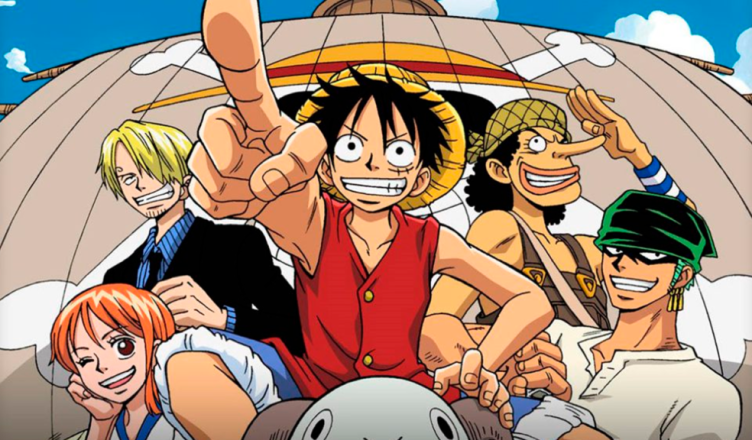
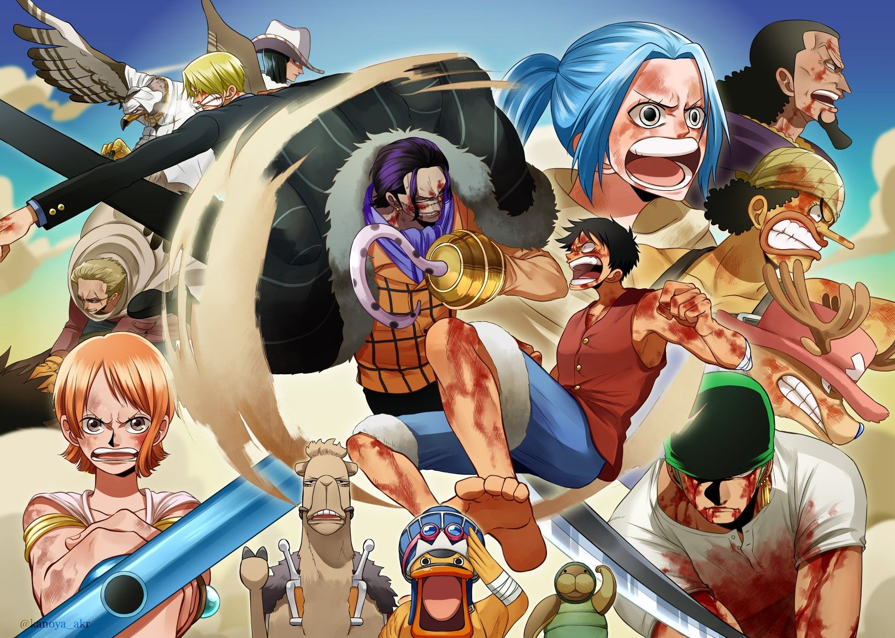
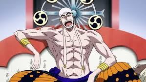
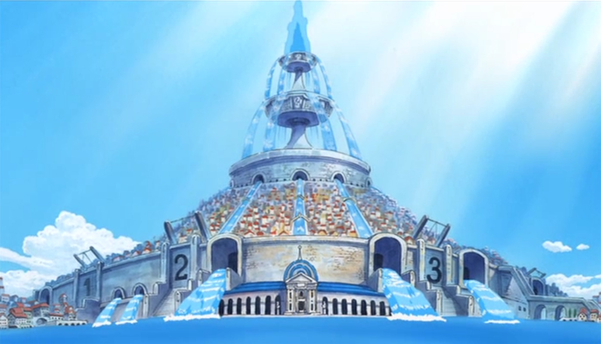
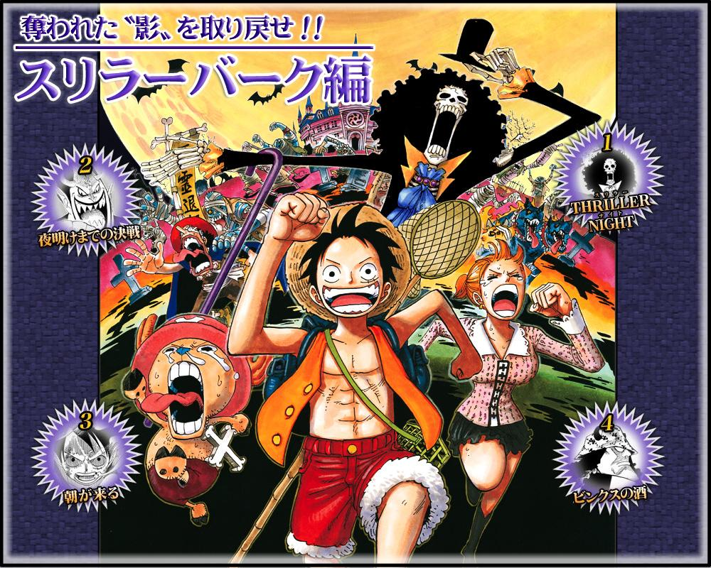
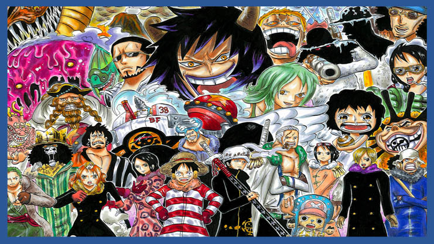
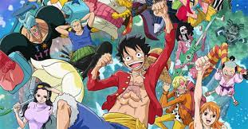
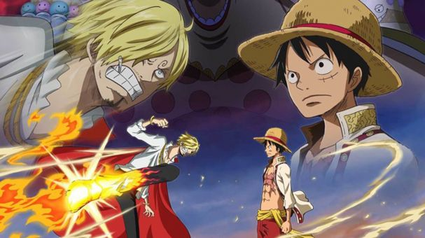
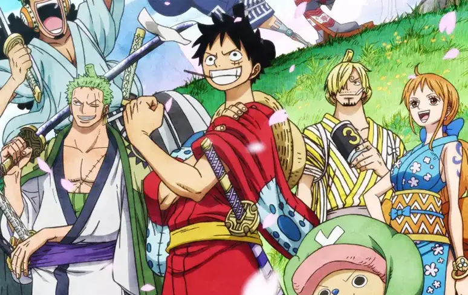

Arco East Blue
O arco East Blue conta como os 5 chapéus de palha se conheceram na região do East Blue, nesse arco somos introduzidos aos objetivos dos personagens e muitas outras coisas como os shichibukais, o All Blue, e as histórias dos personagens principais
Arco Alabasta
No arco de Alabasta os chapéus de palha finalmente conseguem entrar na Grand Line. Nesse arco, o bando conhece Nefertari Vivi, princesa de um reino chamado Alabasta que está no meio de uma Guerra Civil contra uma organização que quer usurpar o país, é também nesse arco que o Chopper e Nico Robin entram no bando.
Arco Skypiea
No arco de Skypiea os chapéus de palha vão investigar um misterioso acontecimento e acabam descobrindo um antigo conto sobre uma terra no céu, esse arco é diferente e é focado em história.
Arco Water 7/Enies Lobby
Na esperança de conseguir consertar seu navio, Luffy e seu bando vão para Water 7, mas acabam se metendo em uma confusão com o governo, agora eles tem que resgatar sua amiga. Nesse arco o bando ganha um novo tripulante: Franky. É considerado por muitos, o arco mais emocionante da obra.
Arco Thriller Bark
Caindo acidentalmente no triangulo florian, os chapeus de palha se encontram em Thriller Bark, uma ilha fantasma comandada pelo Shichibukai Gecko Moria. Nesse arco o bando conhece Brook.
Arco Guerra de Marineford
Nesse arco, a tripulação do chapéu de palha é separada e Luffy descobre que seu irmão, Ace foi capturado pela marinha e será executado. É a partir desse arco que Luffy resolve treinar e é aqui que tudo começa a ter consequencia.

Arco Ilha dos Homens peixe
Após 2 anos de treinamento, os chapéus de palha se reencontram no arquipelago sabaody e vão para o fundo do mar rumo a ilha dos homens peixe. A partir daqui começa a segunda parte do anime.

Arco Punk Hazard
Após entrar no novo mundo, os chapéus de palha chegam na misteriosa Punk Hazard, onde lá vão destruir os projetos de um cientista e de uma organização misteriosa. É nesse arco que somos introduzidos a Aliança Pirata, e também a trama principal da saga do novo mundo.
Arco Dressrosa
No maior arco do anime até hoje, Luffy e os chapéus de palha se infiltram em Dressrosa, onde planejam destruir uma fábrica do shichibukai Doflamingo, mas eles acabam descobrindo que nem tudo no reino são flores.

Arco Zou
Neste arco introdutorio, somos apresentados a raça dos minks, e também somos apresentados a trama do arco de Wano. Nesse arco, Sanji foi mais uma vez separado da tripulaçao.
Arco Whole Cake
Para resgatar Sanji, Luffy, Nami, Chopper, Brook, Carrot vão para Whole Cake, onde pretendem invadir o casamento de Sanji e Pudding, a filha da Yonkou big mom. Nesse arco a recompensa de Luffy sobe muito e ele chega até a ser considerado o 5 yonkou.
Arco País de Wano
Chegando nas terras de Wano, Luffy e os chapéus de palha finalmente se preparam pra enfrentarem Kaido e os piratas das feras junto com os bainhas vermelhas. Nesse arco somos apresentados a Oden e conhecemos mais sobre a história de Gol. D. Roger.
